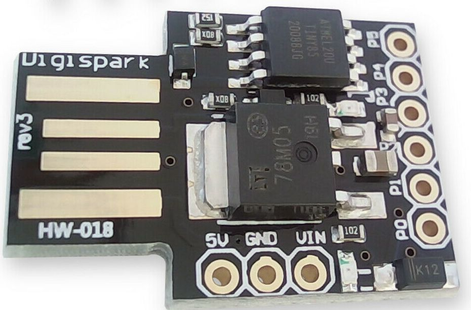
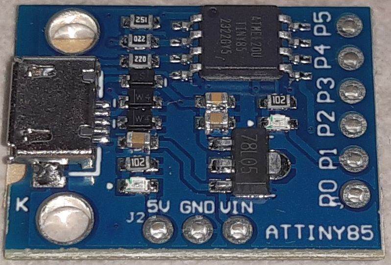
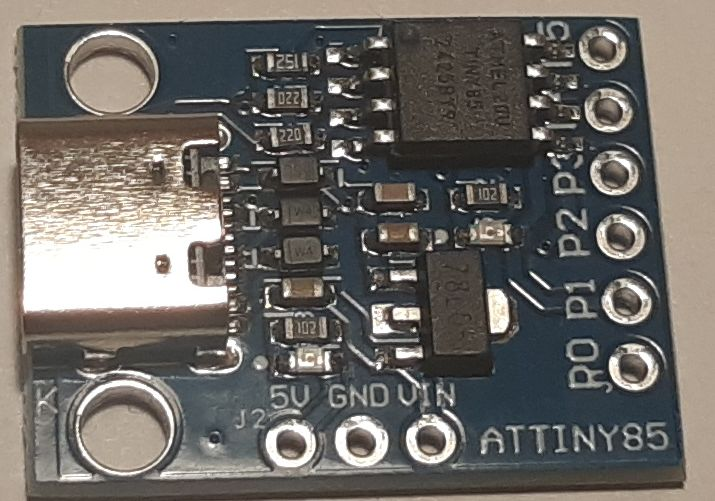

für die Wagenbeleuchtung verwende ich einen Digispark ATtiny85 als DCC Decoder, welcher mit einer Lok Adresse und den Funktionstasten F0, F1 - F3 ( - F12) die LED's ansteuert, es werden nur sehr wenige Bauteile benötigt, kostengünstig.
Voraussetzung alt:
Erweiterung der Arduino IDE Einstellungen um zusätzliche Boardverwalter-URL: http://digistump.com/package_digistump_index.json (alt, offline, Stand: 03.2024)
Werkzeug Board Auswahl: Digispark (Default - 16.5mhz)
Voraussetzung alt:
Erweiterung der Arduino IDE Einstellungen um zusätzliche Boardverwalter-URL: https://drazzy.com/package_drazzy.com_index.json
Board-Verwaltung: suche nach "ATTiny85" und installiere: ATTinycore von Spence Konde V1.5.2
Board Auswahl: "ATTinyCore - ATtiny85 (Micronucleus / DigiSpark)"
Da die URL http://digistump.com/package-digistp.index.json und https://drazzy.com/package_drazzy.com_index.json schon längere Zeit nicht mehr erreichbar sind, hier eine manuelle Installation.
Erweiterung der Arduino IDE Einstellungen um Zusätzliche Boardverwalter-URL:
https://raw.githubusercontent.com/ArminJo/DigistumpArduino/master/package_digistump_index.json
im Boardverwalter suche nach „digistump“ und installiere: Digistump AVR Boards (1.7.5).
Von GitHub https://github.com/SpenceKonde/ATTinyCore/archive/refs/tags/1.5.2.zip Datei downloaden und den Inhalt für die IDE bereitstellen.
Windows nach C:\Users\xxx\AppData\Local\Arduino15\packages\ATTinyCore-1.5.2 kopieren
Linux Mint dem Ordner /home/xxx/Arduino/hardware anlegen
den Inhalt von für ATTinyCore-1.5.2.zip nach /home/xxx/Arduino/hardware/ATTinyCore-1.5.2 kopieren.
Nach dem Neustart der Arduino IDE ist das Board: "ATtiny85 (Micronucleus / DigiSpark)" auswählbar.
nun nur noch in die Bibliotheksverwaltung: suche nach "nmra" und installiere: NmraDcc von Alex Shepherd, Wolfgang Kuffer, ... V2.0.17
nun ein Sketch für den ATtiny85 DCC Funktionsdecoder DCC_ATtiny85.zip (aktualisiert 01.2025)
nur die DCC-Adresse "This_Decoder_Address" anpassen und mit der Arduino IDE, auch im eingelöteten Zustand, zum ATtiny85 hochladen
Beleuchtung für ein Zug mit 3 Wagons:
1. Wagon 4 x LED's Schalten mit F0, F1, F2, F3
2. Wagon 4 x LED's Schalten mit F0, F4, F5, F6
3. Wagon 4 x LED's Schalten mit F0, F7, F8, F9
oder Sketch für den ATtiny85 DCC Funktionsdecoder mit Fahrtrichtungserkennung DCC_DecoderRichtung.zip (aktualisiert 08.2025)
F0 Taste schaltet die Front LED (richtungsabhängig)
F1 Taste schaltet Wagenbeleuchtung LED1 und auch die on Board LED
F2 Taste schaltet Wagenbeleuchtung LED2
F3 Taste schaltet die Rückfahrt LED (richtungsabhängig)
F7 Taste lässt die Beleuchtung flackern.
oder ein Sketch von Michael Hochmuth für den ATtiny85 DCC Funktionsdecoder um die CV Programmierung erweitert: "Michaels Wiki-Seite"
CV's blind auf dem Programmiergleis (PT) schreiben DCC_FunctionDecoder_4Port.zip (aktualisiert 04.2026)
CV1 - DCC Adresse, default 3
CV8 - Schreiben darauf erzeugt ein Reset auf Default-Einstellungen
CV29 - Bit0 Wert 0 Fahrtrichtung "Standard"
CV29 - Bit0 Wert 1 dreht die Richtungserkennung des Wagens um
CV29 - Bit1 Wert 2 28/128 Fahrstufen (default)
CV50 - Lichtkonfiguration, default 0
CV50 - Bit0 Wert 1 unterdrückt F0-Funktion, LED immer aus
CV50 - Bit3 Wert 8 unterdrückt F3-Funktion, LED immer aus
CV50 - Bit7 Wert 128 Richtungserkennung deaktivieren, alle LED's immer schaltbar
F0 Taste schaltet die Front LED (richtungsabhängig)
F1 Taste schaltet Wagenbeleuchtung LED1 und auch die on Board LED
F2 Taste schaltet Wagenbeleuchtung LED2
F3 Taste schaltet die Rückfahrt LED (richtungsabhängig)
ein Sketch für den ATtiny85 DCC Funktionsdecoder mit CV Schreiben und Lesen auf dem Programmiergleis (PT)DCC_FunctionDecoder_3Port-ACK.zip (aktualisiert 04.2026)
(3 x Schalten, Fahrt richtungsabhängig).
Dieses Sketch wurde von Michael Hochmuth um die CV Programmierung erweitert und wird auf seinen Seiten aktualisiert: "Michaels Wiki-Seite"
und "Michaels GitHub-Seite"
CV1 - DCC Adresse, default 3
CV8 - Schreiben darauf erzeugt ein Reset auf Default-Einstellungen
CV29 - Bit0 Wert 0 Fahrtrichtung "Standard"
CV29 - Bit0 Wert 1 dreht die Richtungserkennung des Wagens um
CV29 - Bit1 Wert 2 28/128 Fahrstufen (default)
CV50 - Lichtkonfiguration, default 0
CV50 - Bit0 Wert 1 unterdrückt F0-Funktion, LED immer aus
CV50 - Bit3 Wert 8 unterdrückt F3-Funktion, LED immer aus
CV50 - Bit7 Wert 128 Richtungserkennung deaktivieren, alle LED's immer schaltbar
F0 Taste schaltet die Front LED (richtungsabhängig)
F1 Taste schaltet Wagenbeleuchtung und auch die on Board LED
F3 Taste schaltet die Rückfahrt LED (richtungsabhängig)
alle Versionen getestet mit diesen Digispark ATtiny85 Varianten:
  
der Standard Bootloader t85_default.hex benötigt ca. 6 Sec. Bootloaderzeit.
darum Optional, aber sinnvoll, in Windows, ohne Arduino IDE, nur einmalig pro ATtiny85 Update der ATtiny85 Bootloader Firmware über USB, damit wird die Bootloaderzeit auf 300 mSec minimiert.
Download von Source code (zip) den Inhalt der Datei: micronucleus-firmware-2.6.0.zip entpacken, (externer Link)
in das Verzeichnis nach ...\micronucleus-firmware-2.6.0\utils\ wechseln und 1_Upgrade-t85_entry_on_powerOn_activePullup_fastExit_noLED.cmd ausführen.
Nun wird man aufgefordert den ATtiny85 an einen USB-Anschluss anzustecken, (auch im eingelöteten Zustand),
anschließend wird die Bootloader Firmware upgrade-t85_entry_on_powerOn_activePullup_fastExit_noLED.hex auf Version 2.6 aktualisiert.
Hinweis zu Windows 10:
ich hatte folgenden Fehlermeldung in Windows 10, beim hochladen zum ATtiny85: "Fehlgeschlagenes Hochladen: Hochladefehler: exit status 0xc0000135" (libusb0.dll nicht gefunden)
Abhilfe war C:\Users\username\AppData\Local\Arduino15\packages\ATTinyCore\tools\micronucleus\2.5-azd1b\Drivers\DPinst64.exe als Administrator ausführen.
Hinweis zu Windows 11:
Bei mir war beim Hochladen zum ATtiny85 folgende Fehlermeldung: Fehlgeschlagenes Hochladen: Hochladefehler: exit status 0xc0000135 (libusb0.dll nicht gefunden)
Abhilfe war "C:\Users\username\AppData\Local\Arduino15\packages\digistump\tools\micronucleus\2.6\Digistump_Drivers\DPinst64.exe" als Administrator ausführen und folgende Dateien (libusb0.dll, libusb0.sys, libusbK.dll, lowcdc.sys) kopieren
von "C:\Users\username\AppData\Local\Arduino15\packages\digistump\tools\micronucleus\2.6\Digistump_Drivers\amd64\*"
nach "C:\Users\username\AppData\Local\Arduino15\packages\digistump\tools\micronucleus\2.6\"
Hinweis zu Linux Mint:
nach der Aufforderung zum Anstecken des ATtiny85, war kein Zugriff auf das Device möglich:
Fehlermeldung: usb_open(): Permission denied. For Linux, copy file https://github.com/micronucleus/micronucleus/blob/master/commandline/49-micronucleus.rules to /etc/udev/rules.d.
Lösung war: cd /etc/udev/rules.d
sudo wget https://raw.githubusercontent.com/micronucleus/micronucleus/refs/heads/master/commandline/49-micronucleus.rules